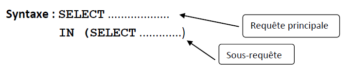
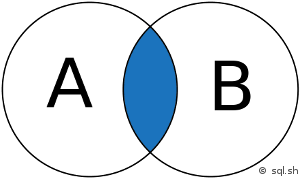

SQL avancé⚓︎
1. Les requêtes imbriquées⚓︎
On va travailler sur le schéma relationnel suivant :
CLIENT (num_cli nom_cli, prénom_cli, adr_cli, cdp_cli, vil_cli, tel_cli)
ARTICLE (num_art, des_art, prx_art, poids_art, coul_art)
COMMANDE (num_com, dat_com, #num_cli, #num_ven)
VENDEUR (num_ven, nom_ven, prénom_ven, sal_ven, vil_ven)
DETAIL (#num_com, #num_art, qte_com)
1.1 Le problème avec les interrogations simples⚓︎
Avec des requêtes simples, on ne peut répondre à tous les besoins d'interrogation.
 : Quel est la désignation de l'article le plus cher ?
: Quel est la désignation de l'article le plus cher ?
: Comparer des enregistrements entre eux: liste des articles qui sont plus lourd que l'article n°8.
- Difficile de s’interroger notamment sur ce qui n’existe pas

- Difficile de s’interroger sur l'existence d'enregistrement vérifiant des conditions qu'on ne peut formuler avec le prédicat WHERE (ex : client qui n'achète rien).
- Difficile de s’interroger sur des critères exprimés par des opérateurs ensemblistes (intersection Vendeur qui ont traité avec le client C01 et C02)
Usage des requêtes imbriquées
- Comparaison à une valeur ou une liste de valeurs
- Gérer des négations
- Renforcer les opérateurs de comparaisons
- Remplacer les jointures internes
1.2 Comparaison à une valeur ou une liste de valeurs⚓︎
1.2.1 Comparaison à une valeur⚓︎
On souhaite comparer une colonne à une valeur variable, contenue dans une table.
: Liste des articles dont le poids est supérieur au poids de l’article 2
On utilise les opérateurs de comparaison (> < = <>) à une seule valeur donc la requête imbriquée ne doit ramener qu’une seule valeur.
SELECT num_art, poids_art
FROM ARTICLE
WHERE poids_art < poids_article_2;
/* or on sait calculer le poids de l'article 2 */
SELECT poids_art
FROM ARTICLE
WHERE num_art=2;
Ordre SQL pour notre exemple :
SELECT num_art, poids_art
FROM ARTICLE
WHERE poids_art < (SELECT poids_art
FROM ARTICLE
WHERE num_art=2);
1.2.1 Comparaison à une liste de valeurs⚓︎
Si la requête SQL peut ramener une liste de valeurs, on utilise l’opérateur IN ou NOT IN.
Les requêtes imbriquées sont basées sur le mot-clé IN qui permet de sélectionner des enregistrements parmi une liste.
Le principe consiste à construire une sous-requête qui donne un résultat équivalent à une liste. Ensuite la requête principale permet de sélectionner des lignes dans la liste précédemment construite.

: Liste des vendeurs qui ont traité avec le client 'C01'
SELECT Nom_Ven, Prénom_Ven
FROM VENDEUR
WHERE Num_Ven IN (SELECT DISTINCT Num_Ven
FROM COMMANDE
WHERE Num_Cli = 'C01');
SELECT Nom_Ven, Prénom_Ven
FROM VENDEUR, COMMANDE
WHERE VENDEUR.Num_Ven = COMMANDE.Num_Ven
AND Num_Cli='CO1';
 Il n'y a pas d'équivalent pour les besoins exprimé à la forme négative.
Il n'y a pas d'équivalent pour les besoins exprimé à la forme négative.
: Liste des vendeurs qui n'ont pas traité avec le client 'C01'
SELECT Nom_Ven, Prénom_Ven
FROM VENDEUR
WHERE Num_Ven NOT IN (SELECT DISTINCT Num_Ven
FROM COMMANDE
WHERE Num_Cli = 'C01');
1.2.3 Syntaxe⚓︎
On ramène la valeur de la variable par un ordre SQL. Le résultat de cet ordre SQL est utilisé dans la condition comme si c’était une variable. L’ordre SQL est le suivant :
SELECT Liste attributs
FROM Liste des tables
WHERE testée opérateur (ordre SELECT)
GROUP BY liste de colonnes de regroupement
HAVING colonne testée (ordre SELECT) ;

GROUP BY et HAVING sont possibles dans une requête imbriquée mais ORDER BY est impossible.
1.3 Opérateurs de comparaison modifiés par ANY ou ALL⚓︎
Les opérateurs de comparaison peuvent voir leur comportement modifié par les mots-clés ANY ou ALL. Ceux-ci s’utilisent généralement avec une liste de valeurs ou une liste résultat d’une sous-requête.
: Liste des articles dont le prix est supérieur au prix de tous les produits rouges
SELECT art_num
FROM ARTICLE
WHERE art_prix > ALL (SELECT art_prix
FROM ARTICLE
WHERE art_coul = ‘ROUGE’);
| Opérateur | Equivalent | ||
|---|---|---|---|
| > | ANY | > à au moins une valeur | > MIN |
| < | ANY | < à au moins une valeur | < MAX |
| = | ANY | = à une valeur de la liste | IN |
| <> | ANY | <> d’au moins une valeur de la liste |
| Opérateur | Equivalent | ||
|---|---|---|---|
| > | ALL | > à toutes les valeurs | > MAX |
| < | ALL | < à toutes les valeurs | < MIN |
| <> | ALL | <> de toutes les valeurs de la liste | NOT IN |
Rq: L'utilisation de ALL et ANY est subtil et peut engendrer des erreurs. On préférera des requêtes utilisant des fonctions de groupes.
2. Opérateurs ensemblistes⚓︎
Ils sont au nombre de 4 :
- Intersection
- Union
- Différence
- Produit
2.1 Intersection⚓︎

Liste des vendeurs qui ont travaillé avec les clients C01 et C02
SELECT nom_ven, prénom_ven
FROM VENDEUR
INNER JOIN COMMANDE
ON VENDEUR.num_ven = COMMANDE.num_ven
WHERE num_cli = 'CO1'
INTERSECT
SELECT nom_ven, prénom_ven
FROM VENDEUR
INNER JOIN COMMANDE
ON VENDEUR.num_ven = COMMANDE.num_ven
WHERE num_cli = 'CO2' ;
SELECT nom_ven, prénom_ven
FROM VENDEUR
INNER JOIN COMMANDE
ON VENDEUR.num_ven = COMMANDE.num_ven
WHERE num_cli = 'CO1'
AND VENDEUR.num_ven IN (SELECT VENDEUR.num_ven
FROM VENDEUR
INNER JOIN COMMANDE
ON VENDEUR.num_ven = COMMANDE.num_ven
WHERE num_cli = 'CO2') ;
2.2 UNION⚓︎
Exemple : Liste des vendeurs qui ont travaillé avec les clients C01 ou C02
SELECT nom_ven, prénom_ven FROM VENDEUR INNER JOIN COMMANDE ON VENDEUR.num_ven = COMMANDE.num_ven WHERE num_cli = 'CO1' UNION SELECT nom_ven, prénom_ven FROM VENDEUR INNER JOIN COMMANDE ON VENDEUR.num_ven = COMMANDE.num_ven WHERE num_cli = 'CO2' ;
doivent correspondre dans les 2 ordres SELECT: o le nombre de colonnes affichées o et le type des données Une équivalence :
SELECT nom_ven, prénom_ven FROM VENDEUR INNER JOIN COMMANDE ON VENDEUR.num_ven = COMMANDE.num_ven WHERE (num_cli = 'CO1' OR num_cli = 'C02'); 3 DIFFERENCE
Liste des vendeurs qui ont travaillé avec le client C01 mais pas avec C02
SELECT nom_ven, prénom_ven FROM VENDEUR INNER JOIN COMMANDE ON VENDEUR.num_ven = COMMANDE.num_ven WHERE num_cli = 'CO1' EXCEPT SELECT nom_ven, prénom_ven FROM VENDEUR INNER JOIN COMMANDE ON VENDEUR.num_ven = COMMANDE.num_ven WHERE num_cli = 'CO2' ;
Une équivalence :
SELECT nom_ven, prénom_ven FROM VENDEUR INNER JOIN COMMANDE ON VENDEUR.num_ven = COMMANDE.num_ven WHERE num_cli = 'CO1' AND VENDEUR.num_ven NOT IN (SELECT VENDEUR.num_ven FROM VENDEUR INNER JOIN COMMANDE ON VENDEUR.num_ven = COMMANDE.num_ven WHERE num_cli = 'CO2') ; 4 PRODUIT
Le produit cartésien affecte à chaque enregistrement d’une table tous les enregistrements d’une autre table. SELECT * FROM CLIENT CROSS JOIN COMMANDE;
num_cli nom_cli prénom_cli vil_cli num_com num_cli num_ven date_com C01 Dupond Marcel Redon C1 C01 V01 2113-01-22 C01 Dupond Marcel Redon C2 C02 V01 2013-02-06 C01 Dupond Marcel Redon C3 C01 V02 2013-02-06 C02 Durand Martine Vannes C1 C01 V01 2113-01-22 C02 Durand Martine Vannes C2 C02 V01 2013-02-06 C02 Durand Martine Vannes C3 C01 V02 2013-02-06
Utilité: détectez ce qui n'est pas.
Exemple : Couple des vendeurs et des clients qui n'ont pas encore traité ensemble: SELECT nom_cli, prénom_cli, nom_ven, prénom_ven FROM CLIENT CROSS JOIN VENDEUR EXCEPT SELECT nom_cli, prénom_cli, nom_ven, prénom_ven FROM CLIENT INNER JOIN COMMANDE ON CLIENT.num_cli = COMMANDE.num_cli INNER JOIN VENDEUR ON COMMANDE.num_ven = VENDEUR.num_ven ;
Exo : opérateur ensembliste
Pour toutes les requêtes, vous proposerez 2 variantes.
1 – Liste des clients qui ont acheté quelque chose et qui habitent Redon.
2 - Liste des articles de couleur verte ou figurant sur la commande numéro 28.
3 - Liste des articles vendus au moins une fois sauf ceux de couleur rouge.
3. Les vues⚓︎
1 Définition Une vue peut être considérée comme une table virtuelle construite à partir de l’exécution d’une requête d’interrogation (SELECT). Elle n’a pas d’existence physique permanente et est construite dynamiquement. On peut les utiliser pour plusieurs raisons : - Mémoriser une requête longue et souvent utilisée - Simplifier l’écriture d’une requête complexe - Cacher certaines colonnes d’une table Pour l’utilisateur, la vue se présente comme n’importe quelle autre table qui dans certains cas pourra même être mise à jour. Dans le cas des emprunts de la bibliothèque, l’application cliente aura certainement besoin – à plusieurs reprises - d’afficher la liste des emprunts suivant des critères différents : - Emprunts non régularisés - Emprunts réalisés par un lecteur - Emprunts d’un ouvrage - Emprunts du mois courant - Etc… Pour un résultat plus lisible, on imagine sans mal que le titre de l’ouvrage ainsi que le nom du lecteur devront être affichés. Pour éviter de répéter les jointures à chaque requête, on définira la vue suivante 1: CREATE VIEW v_emprunt_detail AS SELECT L.NumLecteur, NomLecteur, O.NumOuvrage, TitreOuvrage, DateEmprunt, DateRetour FROM Lecteur L INNER JOIN Emprunter E ON L.NumLecteur = E.NumLecteur INNER JOIN Ouvrage O ON E.NumOuvrage = O.NumOuvrage Sous phpMyAdmin, la vue apparaît dans la liste des tables avec une icône différente : Les requêtes seront ainsi simplifiées : Emprunts non régularisés : Select NumLecteur, NumOuvrage From v_emprunt_detail Where DateRetour Is Null; Emprunts réalisés par un lecteur : Select DateEmprunt, DateRetour, TitreOuvrage From v_emprunt_detail Order By DateEmprunt Desc; BTS SIO1 Exploitation des données - Compléments SQL 7 / 20 2 Mise à jour d’une vue Si une vue ne retourne pas de champs provenant de plusieurs tables (jointure), elle peut être modifiée. Exemple : Création d’une vue qui contient les ouvrages répertoriés dans le genre n°5 intitulé « Réseau » CREATE VIEW v_ouvrage_reseau AS Select TitreOuvrage, AnneeParution, O.NumGenre From Ouvrage O Inner Join Genre G On O.NumGenre = G.NumGenre Where O.NumGenre = 5; Il sera possible ici de rajouter un ouvrage : Insert v_ouvrage_reseau (TitreOuvrage, AnneeParution, NumGenre) Values ("TCP/IP pour les nuls", 2001, 5); L’insertion est bien entendu réalisée dans la table Ouvrage. Cela est possible car tous les champs nécessaires de la table Ouvrage sont renseignés, que l’identifiant est un numéro automatique et que la projection porte sur O.NumGenre. 1 Par convention le nom des vues est
4. les différents types de jointures⚓︎
Les jointures en SQL permettent d’associer plusieurs tables dans une même requête. Cela permet d’exploiter la puissance des bases de données relationnelles pour obtenir des résultats qui combinent les données de plusieurs tables de manière efficace. 1 Exemple En général, les jointures consistent à associer des lignes de 2 tables en associant l’égalité des valeurs d’une colonne d’une première table par rapport à la valeur d’une colonne d’une seconde table. Imaginons qu’une base de 2 données possède une table « utilisateur » et une autre table « adresse » qui contient les adresses de ces utilisateurs. Avec une jointure, il est possible d’obtenir les données de l’utilisateur et de son adresse en une seule requête. On peut aussi imaginer qu’un site web possède une table pour les articles (titre, contenu, date de publication …) et une autre pour les rédacteurs (nom, date d’inscription, date de naissance …). Avec une jointure il est possible d’effectuer une seule recherche pour afficher un article et le nom du rédacteur. Cela évite d’avoir à afficher le nom du rédacteur dans la table « article ».
Types de jointures Il y a plusieurs méthodes pour associer 2 tables ensemble. Voici la liste des différentes techniques qui sont utilisées : • INNER JOIN : jointure interne pour retourner les enregistrements quand la condition est vraie dans les 2 tables. C’est l’une des jointures les plus communes. • CROSS JOIN : jointure croisée permettant de faire le produit cartésien de 2 tables. En d’autres mots, permet de joindre chaque ligne d’une table avec chaque ligne d’une seconde table. Attention, le nombre de résultats est en général très élevé. (et pas toujours très cohérent …) • LEFT JOIN (ou LEFT OUTER JOIN) : jointure externe pour retourner tous les enregistrements de la table de gauche (LEFT = gauche) même si la condition n’est pas vérifié dans l’autre table. • RIGHT JOIN (ou RIGHT OUTER JOIN) : jointure externe pour retourner tous les enregistrements de la table de droite (RIGHT = droite) même si la condition n’est pas vérifié dans l’autre table. • FULL JOIN (ou FULL OUTER JOIN) : jointure externe pour retourner les résultats quand la condition est vrai dans au moins une des 2 tables. • SELF JOIN : permet d’effectuer une jointure d’une table avec elle-même comme si c’était une autre table. • NATURAL JOIN : jointure naturelle entre 2 tables s’il y a au moins une colonne qui porte le même nom entre les 2 tables SQL • UNION JOIN : jointure d’union
3 Exemples de jointures INNER JOIN
Intersection de 2 ensembles SELECT * FROM A INNER JOIN B ON A.key = B.key L’inner join est équivalent à l’équi-jointure de SQL1. SELECT * FROM A, B WHERE A.key = B.Key LEFT JOIN
Jointure gauche (LEFT JOINT) SELECT * FROM A LEFT JOIN B ON A.key = B.key LEFT JOIN (sans l’intersection de B)
Jointure gauche (LEFT JOINT sans l’intersection B) SELECT * FROM A LEFT JOIN B ON A.key = B.key WHERE B.key IS NULL RIGHT JOIN
Jointure droite (RIGHT JOINT) SELECT * FROM A RIGHT JOIN B ON A.key = B.key RIGHT JOIN (sans l’intersection de A)
Jointure droite (RIGHT JOINT sans l’intersection A) SELECT * FROM A RIGHT JOIN B ON A.key = B.key WHERE B.key IS NULL FULL JOIN
Union de 2 ensembles SELECT * FROM A FULL JOIN B ON A.key = B.key FULL JOIN (sans intersection)
Jointure pleine (FULL JOINT sans intersection) SELECT * FROM A FULL JOIN B ON A.key = B.key WHERE A.key IS NULL OR B.key IS NULL